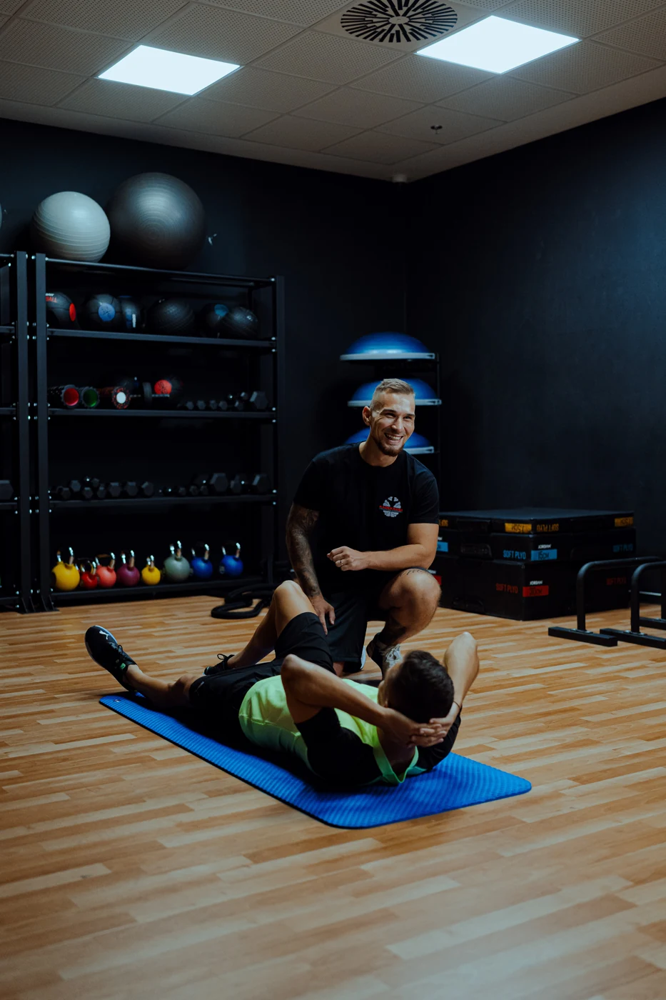

Profesionální a výkonnostní sportovci
Silová a kondiční příprava zaměřená na rozvoj sportovního výkonu a požadavky konkrétní disciplíny.
Silový a kondiční trénink • Praha
Trénink přizpůsobený tvým cílům, možnostem a aktuální výkonnosti.
Ať jsi profesionální sportovec, rekreační cvičenec nebo se silovým tréninkem teprve začínáš, společně nastavíme systematický přístup k tvému rozvoji.

Individuální přístup
Každý člověk má jiné cíle, zkušenosti a pohybové možnosti. Trénink proto vždy přizpůsobuji konkrétním potřebám.
Silová a kondiční příprava zaměřená na rozvoj sportovního výkonu a požadavky konkrétní disciplíny.
Individuální trénink zaměřený na sílu, kondici, složení těla a dlouhodobý rozvoj.
Osvojení správné techniky, základních pohybových vzorů a postupné budování silových schopností.
Pokročilejší plánování a optimalizace tréninku pro dosažení konkrétních výkonnostních či estetických cílů.
Síla · Kondice · Pohyb
Silový a kondiční trénink, pohybové vedení a návrat k zátěži v rozsahu trenérských kompetencí. Nejedná se o zdravotnickou rehabilitaci.
Krok za krokem
Jasný směr od prvního rozhovoru až po průběžné vyhodnocování.
Mám zájem o spolupráciSpolečně probereme tvoje cíle, zkušenosti, časové možnosti a očekávání od tréninku.
Definujeme realistické krátkodobé i dlouhodobé cíle, podle kterých nastavíme spolupráci.
Zhodnotíme základní pohybové vzory, mobilitu, stabilitu a případná pohybová omezení v rozsahu trenérského pohybového screeningu.
Trénink přizpůsobíme tvojí aktuální výkonnosti, schopnostem a stanoveným cílům.
Budeme sledovat vývoj, upravovat tréninkové zatížení a postupně směřovat k dosažení stanovených cílů.
Osobně v Praze 4
Fitness centrum se nachází v 1. patře obchodního centra Novo Plaza.
Zobrazit na mapěAutem: Bezplatně zaparkuješ v garážích OC Novo Plaza nebo na vyhrazeném venkovním parkovišti OC Novo Plaza.
MHD: Zastávka Sídliště Novodvorská.
Zkušenosti klientů
"Na Radka jsem se obrátil po operaci (ACL) kolene s prosbou, že bych se rád vrátil k fotbalu. Po celou dobu Radkovi naprosto se vším co děláme důvěřuji a nyní už se pomalu opět vracím na trávník. Lidský a kamarádský přístup je velmi příjemný a na tréninky chodím rád! Mohu jen doporučit!"
"Ve svém malinko vyšším věku jsem se rozhodla udělat vše pro své tělo ať ze zdravotního ,tak vzhledového hlediska ,aby to bylo k mé spokojenosti.Vybrala jsem trenéra Radka a nemohla jsem udělat lépe.Lidskost,profesionalita,vstřícnost a obrovská trpělivost 😊Děkuju ,že to semnou nevzdáváte trenére"
"Radek je skvely trener, ktery svou praci dela naplno a s laskou. Neustale se vzdelava a je videt, ze sve praci velmi rozumi. Kazdy trenink vymysli neco noveho, zameruje se na cil, ktery jsme si na zacatku nasi spoluprace stanovili a krome skvele pripravenych treninku umi i dobre motivovat a je s nim legrace. Na pravidelnem cviceni s Radkem jsem uz zavisla 🤩💪🏻. Takoveho trenera mohu jen doporucit 👏🏼😊💪🏻."
První krok je na tobě
Napiš mi, jaké jsou tvoje cíle a kdy by se ti tréninky hodily. Společně probereme možnosti spolupráce a domluvíme bezplatnou úvodní konzultaci.
Domluvit bezplatnou konzultaci